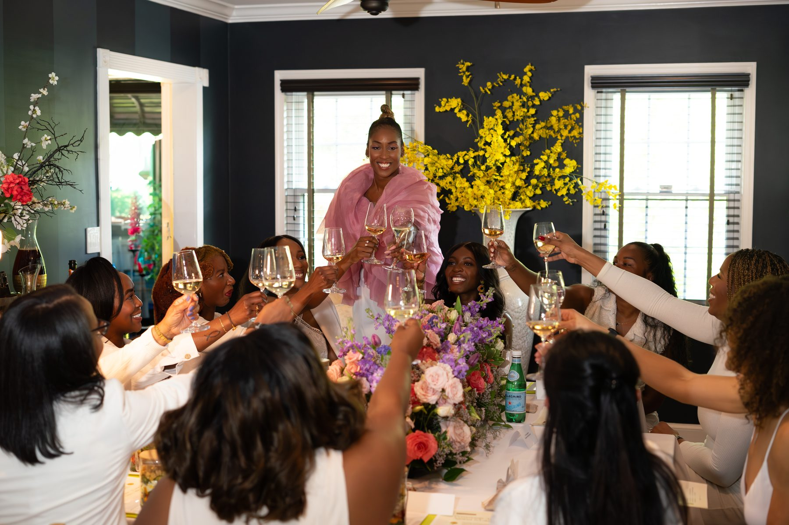

Black Women Rising is a community of women who believe no one has to rise alone. We were built on a simple truth: the right person, at the right moment, can change the entire course of a career. So we made a place where that kind of moment happens often, not by chance, but by design.

We connect women to each other, and to the people, rooms, and opportunities that move careers and lives forward. A newsletter that keeps you close to what's happening. A network built on real introductions, not cold outreach. Curated spaces where relationships deepen into something lasting.
However you find us, you'll find a community that shows up.
“The right person, at the right moment, can change the entire course of a career.”
Nneka Obiekwe has spent over 15 years as a victim advocate and community organizer, working crisis hotlines, accompanying survivors to hospitals, and training universities and organizations on survivor-centered care. That work taught her something simple and enduring: people heal and rebuild fastest when they are not alone.
As a consultant and longtime networker, Nneka was often the person friends turned to for a referral or a connection to a hiring manager. By autumn 2025, those pleas had become a weekly occurrence, and her network was tapped out. She noticed something else, too: most of the people reaching out were Black women like her, and they needed community as much as they needed a job lead. So in September, she started a WhatsApp group chat and posted the link on Threads. Within 24 hours, more than 500 people had joined.
As the group outgrew WhatsApp, she moved it to Discord, where channels like "Share Your Good News" and "Vent Among Friends" gave people space for both the wins and the hard days. Black Women Rising has since been featured in The New York Times, CNBC, Good Morning America, Rolling Stone, and NBC News.
She is committed to building communities that center dignity, care, and sustainable support, whether someone is recovering from harm or rebuilding a career.